Минувшая ICLR была насыщенной и полезной. Мы попросили инженеров Яндекса, посетивших конференцию, поделиться впечатлениями и рассказать о том, что им запомнилось.
Материалы, которые упоминаются в карточках:
— Asynchronous RLHF. Faster And More Efficient Off-Policy RL For LLMs
— Learning Dynamics of LLM Finetuning
— Cheating Automatic LLM Benchmarks: Null Models Achieve High Win Rates
— Strong Model Collapse
— Maximizing the Potential of Synthetic Data: Insights from Random Matrix Theory
— IST-DASLab/MoE-Quant: Code for data-aware compression of DeepSeek models
*Компания Meta признана экстремистской организацией в России.
Душный NLP
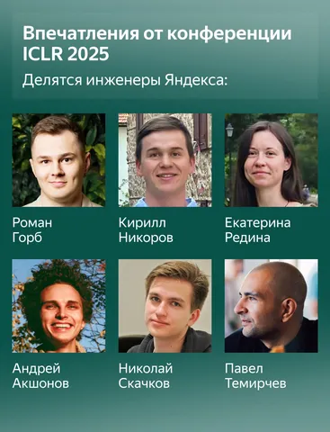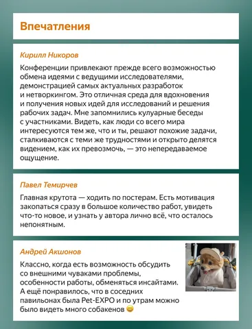 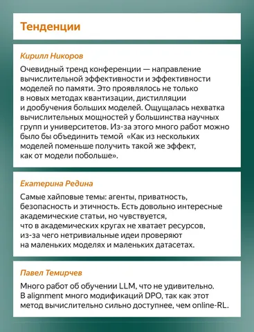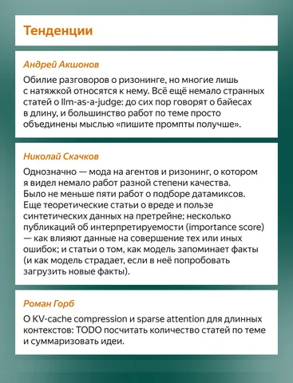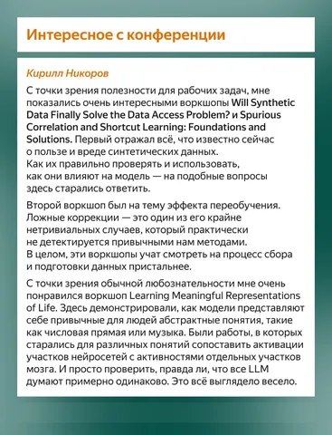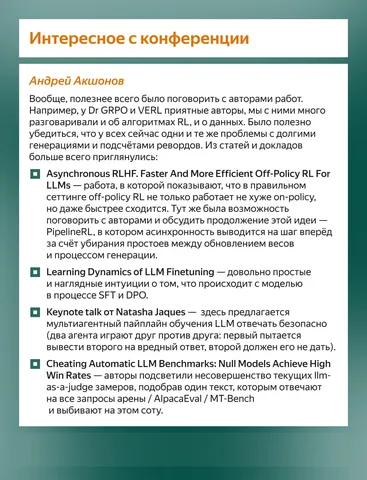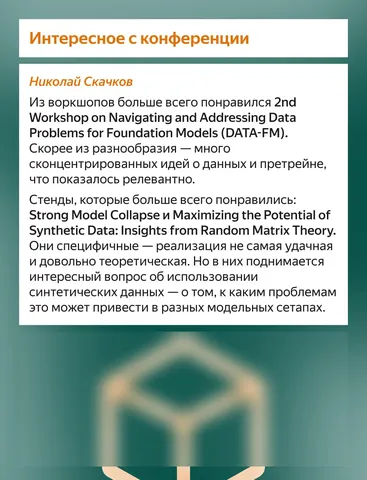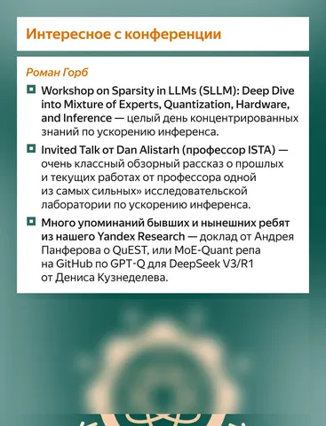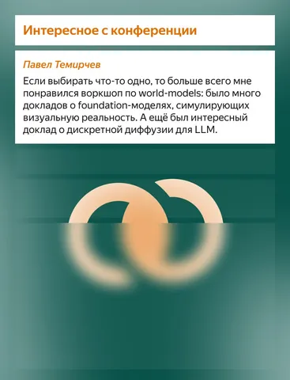
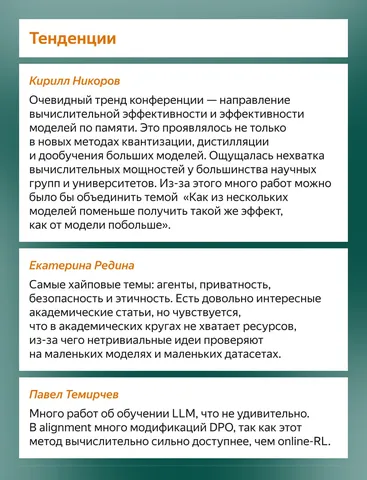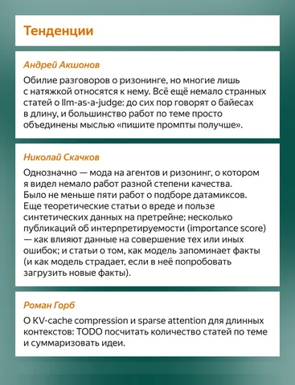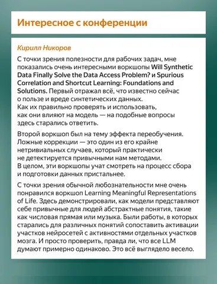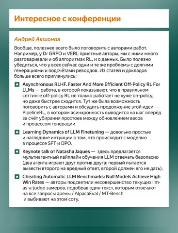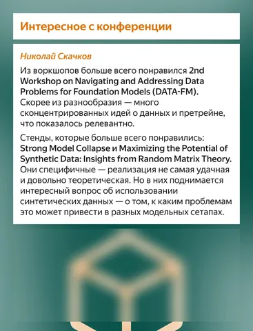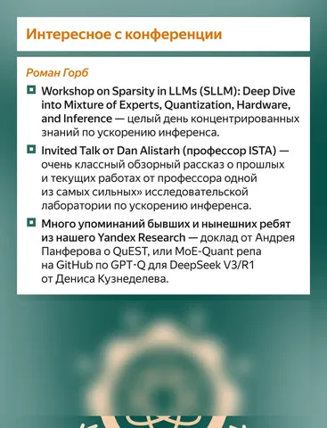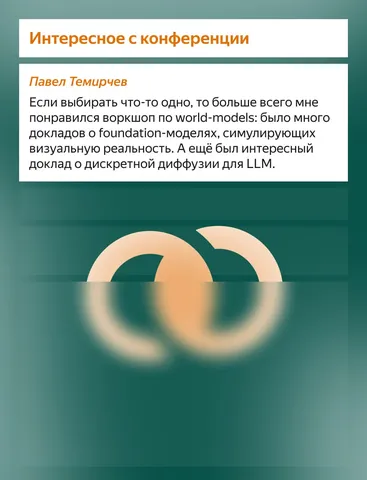
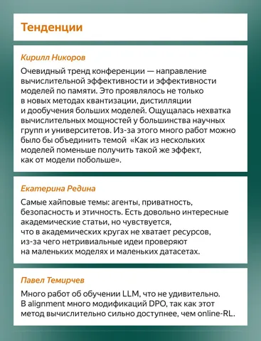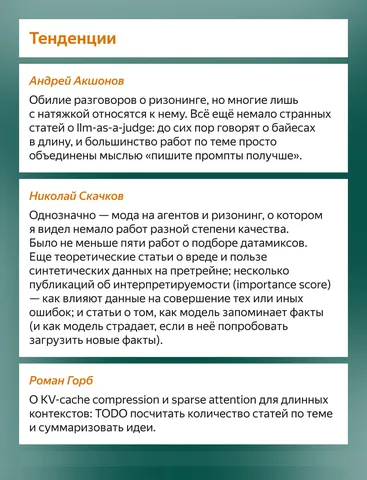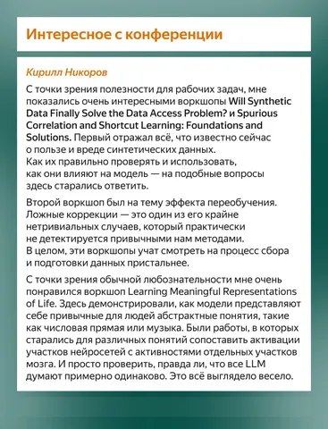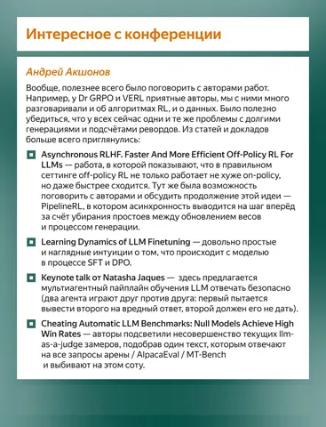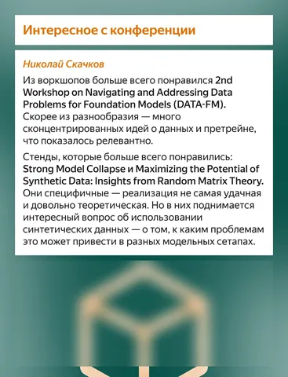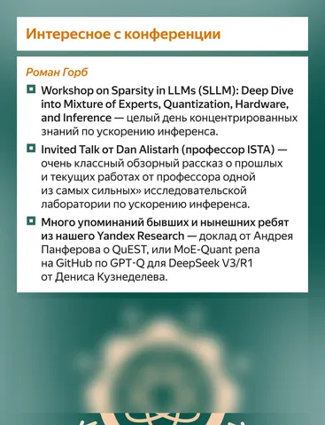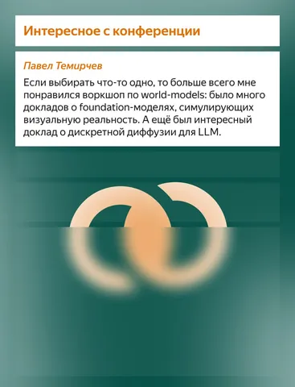